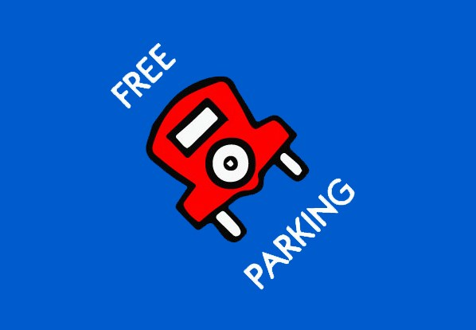

Submitted on Mon, 01/18/2016 - 10:17pm
By Phineas Gage - Recomposition, January 7, 2016
Ike and I walked into Sam’s office at exactly ten in the morning. Not a minute before or after. We never talked to management, especially the Labour Relations guys, with less than a pair present. Sam ran the video on his computer screen for us to look at. It was a clip of a woman walking at night towards a door. She looks over her shoulder and a shadow glides towards her, she lunges for the door and struggles to open it with the key card. Then a leg that ends with a bicycle pedal and two wheels drifts into plain view and off camera. She opens the glass door and then slams the door behind her and leans on it, panting. The clip then looped and played over again.
“So, in the investigation, you told the sister that you think the union put her up to this?” I asked.
I was starting to feel a keen rage swelling up inside of me but I grabbed the arms of the chair tightly and tried to keep my cool.
Sam’s face was like cold stone.
“It’s too convenient. You guys start complaining about the health and safety at the Transportation yard and all of a sudden someone almost gets ‘attacked’ in the yard?” He was doing the scare quotes with his fingers.
The video clip completed another loop.
I could feel my anger at the situation starting to effect my judgement. He was probably egging me on.
“I don’t think this is staged Sam. I mean, really, all things being equal, what is more likely: a confrontation with someone at night outside a downtown workstation or an elaborate conspiracy to put a show on for the cameras?” I was smiling and trying to insert some humour into the situation.
The clip completed another loop.
I could feel a light stinging sensation on the back of my thighs as soon as Sam started to talk again. The hairs on my arms were starting to stand on end.
“What are you laughing at? This isn’t funny. See, this is his problem, Ike, he doesn’t take this stuff seriously.” Sam was dripping with condescension. That and cologne.
I shot out of my chair, like a bullet, and leaned over his desk stuffing my index finger into the space in front of his chest. I could see Ike’s eyes go wide as my one arm stretched out towards him, my index finger stopping just shy of his chest. ‘Never, ever, touch them, Phineas, especially when angry’, I told myself.
“You’re fucking lucky all I’m doing is laughing, you dickhead. A woman almost got assaulted in your parking lot and your first response is to spin an insane conspiracy theory about performance art in front of surveillance cameras? What kind of piece of shit sociopath does that?”
I regained composure and looked at Ike.
Ike nodded and said, “I think that is about as of thorough an exploration of the issues we are going to get today,” He gently grabbed my arm and we walked out.
 In a move seen often by workers attempting to improve workplace conditions, trucking bosses fired 15 drivers in North Carolina and Virginia early in January this year. The companies claim it was for decreased business volumes, but most of the drivers were among internal organizers for the IWW. In addition, the companies began hiring new drivers immediately following the lay offs. "We have no doubt this was in retaliation for our organizing efforts," one driver said at a meeting held January 17.
In a move seen often by workers attempting to improve workplace conditions, trucking bosses fired 15 drivers in North Carolina and Virginia early in January this year. The companies claim it was for decreased business volumes, but most of the drivers were among internal organizers for the IWW. In addition, the companies began hiring new drivers immediately following the lay offs. "We have no doubt this was in retaliation for our organizing efforts," one driver said at a meeting held January 17.